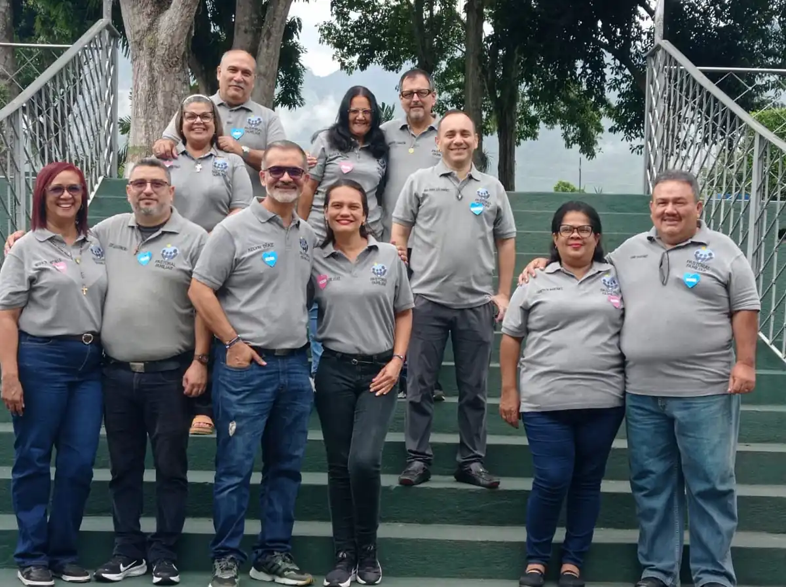

Familia
Área de Familia
El Área de Familia y Vida acompaña a las familias venezolanas con formación, campañas y encuentros durante todo el año. Pertenece al Centro de Laicos, Familia y Juventud del Secretariado Permanente del Episcopado Venezolano (SPEV).

Qué hace el Área
El Área organiza las campañas y los encuentros nacionales de pastoral familiar que promueve la Conferencia Episcopal Venezolana (CEV). Su público son las familias, las parroquias, los centros educativos, los movimientos y los equipos diocesanos de pastoral familiar.
Los coordinadores del Área son Jannet de Rivas y Pedro Rivas.
Qué hace durante el año
El Área sigue un ciclo que se ha repetido en los últimos años:
- Marzo: Semana por la Vida, con formaciones virtuales.
- Septiembre: Asamblea Nacional de Pastoral Familiar.
- Octubre y noviembre: campaña Abrazo en Familia.
- Todo el año: formación de equipos y agentes, con encuentros virtuales y presenciales.
En 2026 también se realizaron un retiro y un encuentro de parejas en El Hatillo, y un encuentro provincial de pastoral familiar en la Provincia Eclesiástica de Barquisimeto.
las fechas de 2027 no están anunciadas. Se publicarán cuando el Centro las confirme.
Páginas del Área
- Abrazo en Familia: la campaña nacional de cada año, con su lema y sus materiales.
- Semana por la Vida: la semana de marzo en defensa de la vida desde la familia.
- Asamblea Nacional de Pastoral Familiar: el encuentro anual de septiembre.
- Programas y materiales: las líneas de formación y los recursos del Área.
Galería

Grupo de adultos con camisas grises posando en una escalinata de jardín.. Crédito: Centro de Laicos, Familia y Juventud, CEV.
Eventos de esta área
Del 25 al 27 de septiembre de 2026
Asamblea Nacional de Pastoral Familiar 2026
RealizadoAsamblea · Familia
Del 19 al 25 de marzo de 2026
Campaña presentada el 3 de octubre de 2025 (fechas nacionales de la semana por confirmar)
Del 26 al 28 de septiembre de 2025
Del 7 al 9 de marzo de 2025
Diplomado de Pastoral Familiar, módulo III
RealizadoFormación · Familia
Octubre y noviembre de 2024 (fechas nacionales de la semana por confirmar)
Viernes 13 y sábado 14 de septiembre de 2024
11, 15 y 17 de abril de 2024
Del 5 al 12 de noviembre de 2023
Del 6 al 13 de noviembre de 2022
22 y 23 de septiembre de 2022
Semana del 20 al 27 de marzo de 2022; II Seminario por la Vida el 11 y 12 de marzo
28 y 29 de enero de 2022
Del 1 de octubre al 8 de noviembre de 2026 (fechas según notas diocesanas; fechas nacionales por confirmar)
Campaña Abrazo en Familia 2026
RealizadoCampaña · Familia
Sábado 23 de mayo de 2026
Sábado 17 de octubre de 2026
Lunes 8 de junio de 2026
Domingo 26 de julio de 2026; dos encuentros virtuales posteriores (fechas por confirmar)
Fuentes
- Sitio actual del Centro: Familia
- Sitio actual del Centro: Programas de Familia
- CEV: lanzamiento de Abrazo en Familia 2026
- CEV: Semana por la Vida 2026
- CEV: balance de la Asamblea Nacional de Pastoral Familiar 2026
- CEV: encuentro de parejas en El Hatillo
- CEV: retiro de parejas en El Hatillo
- CEV: encuentro provincial de pastoral familiar en Barquisimeto
- CEV: guía del facilitador 2025, créditos del Área